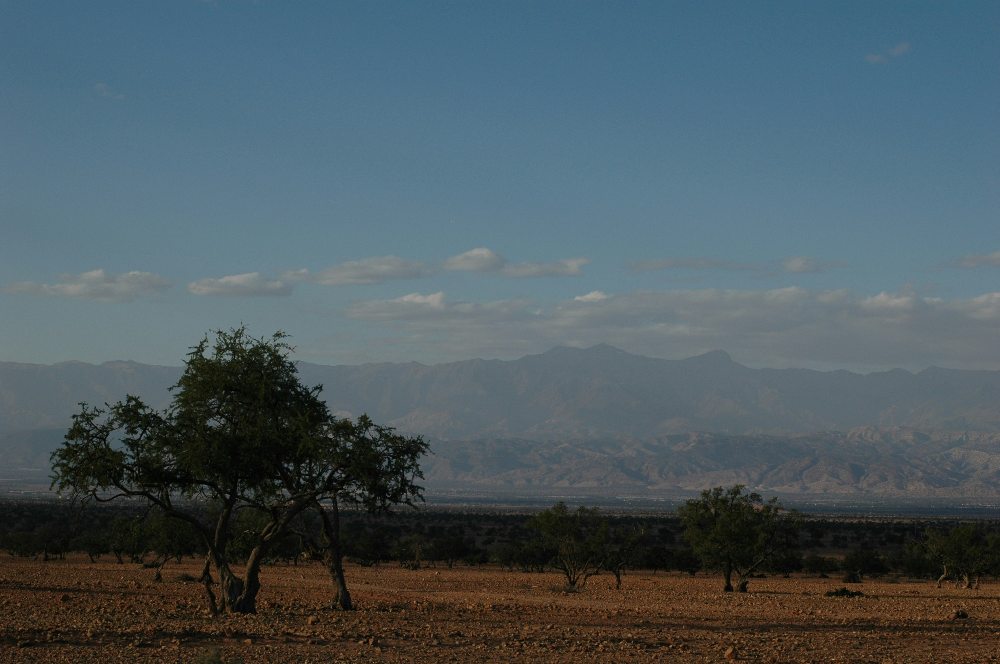

Empowering Communities, Building Futures
Our Community Commitment
Operating in remote villages and in largely underdeveloped areas, it is important for TEMA to contribute to the improvement of the lives of villagers. We recognize that our success is intrinsically linked to the well-being of the communities where we operate. Beyond our mining operations, we see ourselves as partners in community development, working hand-in-hand with local residents, traditional leaders, and government agencies to create lasting positive change.
Education & Skills Development
Education is the cornerstone of sustainable development. We will issue bursaries and provide onsite training for students in the various mining faculties at tertiary institutions. This initiative will help ensure students have opportunities to complete their practical's while gaining valuable experience (TBA). Our scholarship program targets promising students from local communities, covering tuition fees, accommodation, books, and living expenses for students pursuing degrees in mining engineering, geology, environmental science, and related fields.
Beyond financial support, we offer mentorship programs where our experienced engineers and geologists work directly with students, providing guidance on career development and industry insights. Students benefit from internships at our mining sites, where they gain hands-on experience with modern mining equipment, safety protocols, and sustainable practices. Many of our scholarship recipients return to work with TEMA after graduation, bringing fresh perspectives and contributing to the local talent pool.
Vocational Training Programs
Not everyone pursues university education, and we recognize the critical importance of skilled tradespeople in the mining industry. Our vocational training center offers courses in equipment operation, welding, electrical work, mechanics, and mine safety. These programs are specifically designed to meet the needs of the mining sector while providing participants with transferable skills that can be applied in various industries. Training is offered free of charge to community members, and graduates are given preference for employment opportunities at our sites.
Water Access & Infrastructure
Water scarcity is one of the most pressing challenges facing rural Namibian communities. TEMA will drill water wells in communities we are working in, providing reliable access to clean water for drinking, cooking, and agricultural use. We don't simply drill wells and leave—we ensure sustainability by training local maintenance committees, providing spare parts, and establishing monitoring systems to ensure long-term functionality.
Our water projects incorporate solar-powered pumping systems where feasible, reducing operating costs and environmental impact. We also conduct water quality testing regularly to ensure safety standards are maintained. To date, our initiatives have provided clean water access to over 5,000 people across multiple villages in Northern Namibia. Each water point is strategically located to serve multiple households, reducing the time and distance women and children must travel to collect water—time that can now be invested in education and economic activities.
Healthcare Initiatives
Access to healthcare in remote mining areas is often limited or non-existent. TEMA will assist the community by constructing community health centers and providing transport for locals to these health facilities. Our health centers are equipped with basic medical supplies, examination rooms, and staffed by qualified nurses who provide primary healthcare services, maternal and child health support, and health education.
Beyond infrastructure, we operate mobile health clinics that visit outlying villages on a regular schedule, ensuring that even the most remote community members have access to medical care. Our transport program provides free ambulance services for emergency cases and subsidized transport for patients who need to travel to regional hospitals for specialized treatment. We've also partnered with pharmaceutical companies to provide essential medications at reduced costs or free of charge to those who cannot afford them.
Women's Empowerment Programs
Women play a vital role in rural economies, yet often face significant barriers to economic participation. Our women's empowerment initiatives include business skills training, microfinance programs, and support for women-led cooperatives. We provide training in income-generating activities such as tailoring, food processing, vegetable gardening, and crafts production. Participants receive startup capital through our microloan program, which features favorable terms and built-in flexibility to accommodate seasonal income variations.
We've established women's savings groups in multiple communities, helping women build financial literacy and access to credit. These groups have proven remarkably successful, with repayment rates exceeding 95% and many members expanding their businesses to create employment for others. We also prioritize women in our preferential procurement policies, actively seeking suppliers and contractors owned and operated by women from local communities.
Youth Development & Sports
Young people represent the future of our communities. Our youth programs provide constructive activities that keep young people engaged, develop their skills, and build positive values. We've constructed sports facilities including football fields, netball courts, and multi-purpose recreation areas. These facilities host regular tournaments and leagues, fostering teamwork, discipline, and healthy competition.
Beyond sports, we run youth leadership camps, career guidance workshops, and computer literacy programs. Our youth employment initiative provides temporary work opportunities during school holidays, giving young people their first work experience while earning income to support their education. Many participants in our youth programs have gone on to become community leaders, entrepreneurs, and professionals, creating a positive cycle of development.
Agricultural Support
Agriculture remains the primary livelihood for most rural families. We support local farmers through training in modern farming techniques, provision of improved seeds and tools, and access to markets. Our agricultural extension program connects farmers with agronomists who provide advice on crop selection, pest management, and soil conservation. We've established demonstration plots where farmers can see new techniques in practice before adopting them on their own land.
We guarantee market access by purchasing vegetables and other produce from local farmers for our mine cafeterias, providing reliable income and eliminating the need for farmers to travel long distances to sell their produce. Our drip irrigation program helps farmers make efficient use of limited water resources, significantly increasing yields while reducing labor requirements. These initiatives are helping transform subsistence farming into viable commercial enterprises.
Cultural Preservation
We recognize that the communities where we operate have rich cultural traditions that must be respected and preserved. Our cultural heritage program documents traditional knowledge, supports cultural festivals and celebrations, and ensures that traditional authorities are consulted on all matters affecting their communities. We employ local cultural liaison officers who serve as bridges between the company and communities, ensuring that our operations respect local customs and traditions.
We've supported the construction of cultural centers where elders can pass traditional knowledge to younger generations, and where communities can celebrate important cultural occasions. Our oral history project has recorded stories, songs, and traditional practices, creating an archive that will preserve this knowledge for future generations. We believe that economic development and cultural preservation are not mutually exclusive but rather complementary goals that must be pursued together.
Small Business Development
Economic diversification is essential for sustainable community development. Our small business development program provides training, mentorship, and funding for local entrepreneurs. We run regular workshops on business planning, financial management, marketing, and customer service. Entrepreneurs who complete our training program can apply for startup capital from our small business fund, which provides low-interest loans with flexible repayment terms.
Our preferential procurement policy ensures that a significant portion of our supply chain is sourced from local businesses. We purchase everything from food supplies to cleaning services, office supplies to transport services from local providers wherever possible. We actively work to develop local suppliers, providing technical assistance and advance payments when necessary to help them fulfill contracts. This approach keeps economic benefits circulating within local communities rather than flowing to distant cities or foreign countries.
Environmental Education
Environmental stewardship requires knowledge and awareness. Our environmental education programs teach community members, especially young people, about local ecosystems, conservation principles, and sustainable resource management. We run school programs where our environmental specialists give presentations and organize field trips to nature reserves and our rehabilitation sites, showing students how mining can be conducted responsibly.
Our tree-planting initiatives have engaged thousands of community members in restoring degraded areas and creating green spaces in villages. Participants learn about native tree species, proper planting techniques, and ongoing maintenance. These projects provide environmental benefits while creating temporary employment and instilling a conservation ethic among participants. We've planted over 50,000 trees through these programs, creating lasting green legacies in the communities where we operate.
Measuring Our Impact
We are committed to transparency and accountability in our social outreach programs. We regularly conduct impact assessments to measure the effectiveness of our initiatives and identify areas for improvement. We track metrics such as school enrollment rates, healthcare utilization, business survival rates, employment statistics, and income levels in communities where we operate. This data-driven approach ensures that our programs are making real differences in people's lives and allows us to adjust our strategies based on evidence of what works.
We publish annual social impact reports that detail our investments, activities, and outcomes. These reports are shared with community members, government agencies, and other stakeholders, ensuring transparency and facilitating dialogue about our social performance. We actively seek feedback from community members through regular meetings, suggestion boxes, and grievance mechanisms, ensuring that our programs remain responsive to community needs and priorities.